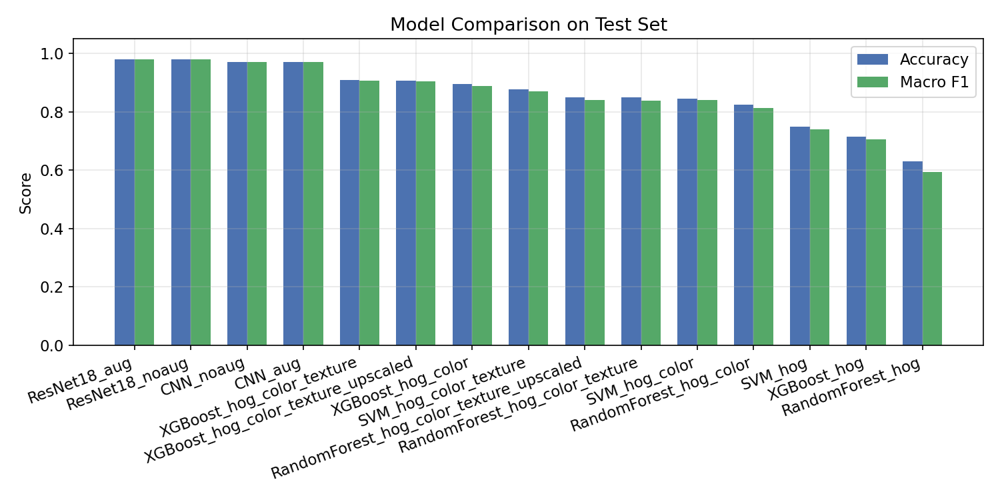
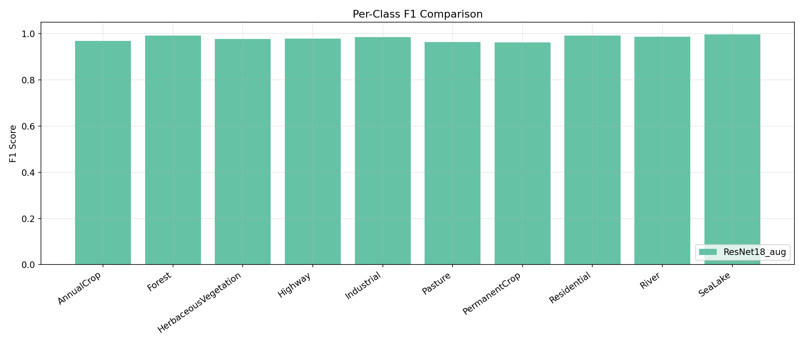
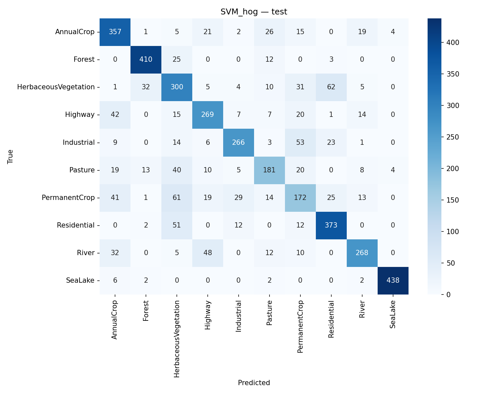
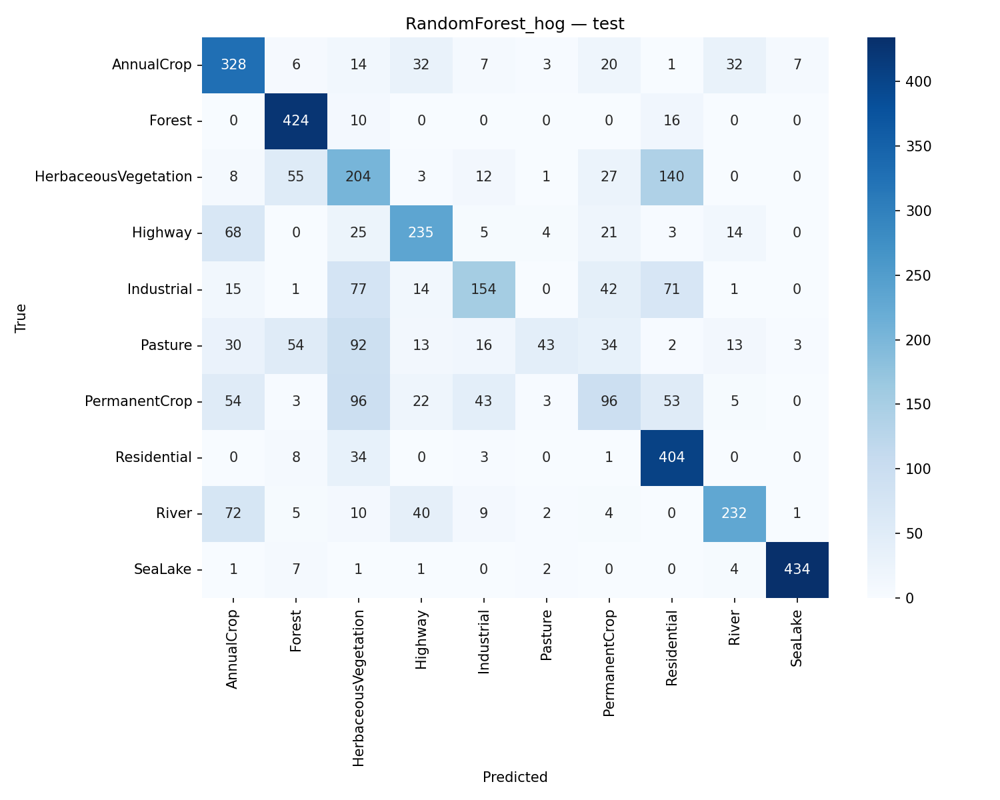

Course: CS-464
Section: 1
Group: 8
Team Members:
Land use and land cover classification from satellite imagery is a core task in remote sensing and environmental monitoring. Practical applications include urban growth tracking, agricultural planning, disaster response, and ecological assessment. The quality of automated classification directly influences downstream policy and operational decisions; therefore, model robustness and interpretability are both important.
In this project, we investigate multi-class classification on the EuroSAT RGB benchmark and compare classical machine learning (ML) methods with deep learning (DL) methods. Our objective is to measure predictive performance under standard clean conditions, and to analyze model behavior under synthetic image degradations that mimic real-world acquisition issues such as blur, noise, and reduced spatial resolution.
The study is designed to produce a reproducible pipeline with clear experimental stages: data ingestion and split management, feature extraction (for ML), model training, evaluation, robustness testing, and result summarization. The implementation includes both modular source code and executable scripts for end-to-end runs.
We use the EuroSAT RGB dataset, which contains 27,000 satellite image patches distributed across 10 classes:
The current project setup verifies all 10 classes and all 27,000 images in the expected directory structure. Images are stored in per-class folders, which naturally support supervised classification. The dataset exhibits common remote sensing challenges:
The pipeline uses stratified splitting to preserve class balance across train/validation/test partitions:
For classical ML pipelines, images are resized to 64x64 before handcrafted feature extraction. For DL pipelines, images are resized to 224x224 and normalized with ImageNet statistics to match ResNet pretraining assumptions.
The code saves split metadata (split_train.csv, split_val.csv, split_test.csv) and class-index mapping (class_names.json) for strict reproducibility across runs.
The implementation is in Python and uses:
The project is organized as:
run_ml.py: Classical ML pipeline entry scriptrun_dl.py: DL pipeline entry scriptrun_robustness.py: Degradation-based robustness evaluationsummarize_results.py: Aggregates metrics and generates comparison plotssrc/: reusable modules (data, features, ml, dl, robustness, evaluation)configs/: YAML files for experiment settingsThis organization supports both reproducibility and incremental experimentation.
The planned classical models are:
For ML models, handcrafted feature ablation is implemented:
hoghog_colorhog_color_textureThe DL model is ResNet18, optionally initialized with ImageNet pretrained weights and fine-tuned for 10-way classification.
The implemented framework supports:
At the current reporting stage, we completed a stable end-to-end ML run on the full EuroSAT split (70/15/15) for two baseline models under the HOG feature setting:
The objective of this stage is to establish a reproducible baseline with validated outputs (metrics files, confusion matrices, and comparison plots) before launching the full ablation matrix (additional feature modes, DL training, and robustness evaluation).
These results should be interpreted as preliminary benchmark evidence for the progress checkpoint, not as final model rankings for the end-of-term submission.
At this stage, the following milestones are completed and validated:
Current test-set summary from results/metrics/overall_test_summary.csv:
| Model | Accuracy | Macro-Precision | Macro-Recall | Macro-F1 |
|---|---|---|---|---|
| RandomForest_hog | 0.6232 | 0.6189 | 0.5976 | 0.5862 |
| SVM_hog | 0.5958 | 0.5875 | 0.5800 | 0.5809 |
At this checkpoint, RandomForest_hog provides the strongest overall performance among the completed runs.
Figure 1: Model-level comparison (Accuracy and Macro-F1)

Figure 2: Per-class F1 comparison

Figure 3: Test confusion matrix for SVM_hog

Figure 4: Test confusion matrix for RandomForest_hog

Remaining tasks for final delivery:
hog_color, hog_color_texture) and complete model matrixAdditionally, we plan to include a concise discussion on computational cost and training-time tradeoffs between ML and DL settings.
The implementation is organized to support explicit division of labor. Current and planned role mapping:
In the final submission, each member’s specific completed tasks (files/modules and experiment ownership) will be listed explicitly.
Helber, P., Bischke, B., Dengel, A., & Borth, D. (2018). EuroSAT: A Novel Dataset and Deep Learning Benchmark for Land Use and Land Cover Classification. Zenodo. Available: https://zenodo.org/records/7711810
Pedregosa, F. et al. (2011). Scikit-learn: Machine Learning in Python. Journal of Machine Learning Research.
He, K., Zhang, X., Ren, S., & Sun, J. (2016). Deep Residual Learning for Image Recognition. CVPR.
This appendix presents all experiment outputs produced at the current progress milestone. Artifacts are organized into three categories: quantitative metrics, per-class breakdowns, and visual outputs. All files are stored under the results/ directory within the project repository.
Note: This appendix reflects the state of the pipeline at the progress reporting stage. The full experiment set (additional feature modes, DL training, robustness evaluation) will be appended in the final report submission.
The following table summarizes test-set performance for the two models trained to date, produced by summarize_results.py from results/metrics/overall_test_summary.csv:
| Model | Accuracy | Macro-Precision | Macro-Recall | Macro-F1 |
|---|---|---|---|---|
| RandomForest_hog | 0.6232 | 0.6189 | 0.5976 | 0.5862 |
| SVM_hog | 0.5958 | 0.5875 | 0.5800 | 0.5809 |
Both models were trained on the full EuroSAT training split (18,900 samples) using HOG features with a stratified 70/15/15 partition.
The following tables are drawn from the per-model classification reports stored in results/metrics/.
Table A.2.1 — SVM_hog (Test Set)
| Class | Precision | Recall | F1-Score | Support |
|---|---|---|---|---|
| AnnualCrop | 0.518 | 0.620 | 0.564 | 450 |
| Forest | 0.804 | 0.849 | 0.826 | 450 |
| HerbaceousVegetation | 0.360 | 0.476 | 0.410 | 450 |
| Highway | 0.529 | 0.533 | 0.531 | 375 |
| Industrial | 0.615 | 0.576 | 0.595 | 375 |
| Pasture | 0.471 | 0.400 | 0.432 | 300 |
| PermanentCrop | 0.363 | 0.261 | 0.304 | 375 |
| Residential | 0.707 | 0.660 | 0.683 | 450 |
| River | 0.534 | 0.456 | 0.492 | 375 |
| SeaLake | 0.973 | 0.969 | 0.971 | 450 |
| Macro avg | 0.587 | 0.580 | 0.581 | 4050 |
Table A.2.2 — RandomForest_hog (Test Set)
| Class | Precision | Recall | F1-Score | Support |
|---|---|---|---|---|
| AnnualCrop | 0.581 | 0.724 | 0.645 | 450 |
| Forest | 0.724 | 0.931 | 0.814 | 450 |
| HerbaceousVegetation | 0.360 | 0.427 | 0.391 | 450 |
| Highway | 0.680 | 0.619 | 0.648 | 375 |
| Industrial | 0.572 | 0.392 | 0.465 | 375 |
| Pasture | 0.605 | 0.173 | 0.269 | 300 |
| PermanentCrop | 0.364 | 0.224 | 0.277 | 375 |
| Residential | 0.571 | 0.898 | 0.698 | 450 |
| River | 0.755 | 0.624 | 0.683 | 375 |
| SeaLake | 0.977 | 0.964 | 0.971 | 450 |
| Macro avg | 0.619 | 0.598 | 0.586 | 4050 |
Observations: Both models achieve strong performance on spectrally distinct classes (SeaLake: F1 ~0.97, Forest: F1 ~0.81–0.83). The most difficult classes are PermanentCrop and HerbaceousVegetation, which are visually similar to AnnualCrop and Pasture respectively, leading to lower recall values.
Figure A.1 shows accuracy and macro-F1 side-by-side for all trained models at this stage.
Figure A.1 — Test-set accuracy and macro-F1 for SVM_hog and RandomForest_hog.
Figure A.2 shows the breakdown of F1 per class for both models, allowing direct class-level comparison.
Figure A.2 — Per-class F1 scores across models. SeaLake and Forest consistently outperform other categories; PermanentCrop and HerbaceousVegetation remain the most challenging.
Figures A.3 and A.4 show the test-set confusion matrices for SVM_hog and RandomForest_hog respectively.
Figure A.3 — SVM_hog test confusion matrix. Notable confusion: HerbaceousVegetation ↔ AnnualCrop, PermanentCrop ↔ AnnualCrop.
Figure A.4 — RandomForest_hog test confusion matrix. Higher recall for AnnualCrop and Residential but reduced precision for Pasture.
Split metadata and trained model checkpoints are stored for exact reproducibility:
results/logs/split_train.csv, split_val.csv, split_test.csv — image paths and labels per partitionresults/logs/class_names.json — class-to-index mappingresults/models/SVM_hog.pkl — trained SVM pipeline (scikit-learn joblib)results/models/RandomForest_hog.pkl — trained Random Forest pipelineThe following outputs will be added as the remaining experiments are completed:
| Artifact | Source |
|---|---|
| Full ML ablation table (hog_color, hog_color_texture feature modes) | run_ml.py |
| DL training curves (ResNet18 ± augmentation) | run_dl.py |
| DL confusion matrices and test report | run_dl.py |
| Robustness result table (blur/noise/downsample) | run_robustness.py |
| Robustness comparison figure | summarize_results.py |